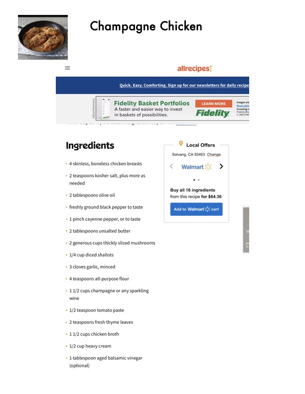

Champagne Chicken

Original cookbook page 684
Ingredients
- Solvang, CA 93463 Change
- 4skinless, boneless chicken breasts
- Walmart>\< >
- 2 teaspoons kosher salt, plus more as
- needed
- * 2 tablespoons olive oil from this recipe for $64.36
- freshly ground black pepper to taste FeRTOR A nen Seen'
- Lpinch cayenne pepper, or to taste
- 2 tablespoons unsalted butter
- 2 generous cups thickly sliced mushrooms
- 1/4cup diced shallots
- 3 cloves garlic, minced
- 4teaspoons all-purpose flour
- 11/2 cups champagne or any sparkling
- wine
- 1/2 teaspoon tomato paste
- 2 teaspoons fresh thyme leaves
- * 11/2 cups chicken broth
- 1/2 cup heavy cream
- 1tablespoon aged balsamic vinegar
- (optional)
Instructions
- for our newsletters for daily recipe}
- * 2 tablespoons unsalted butter i ° 2 generous cups thickly sliced mushrooms vy ° 1/4 cup diced shallots
Recipe #684 from collection